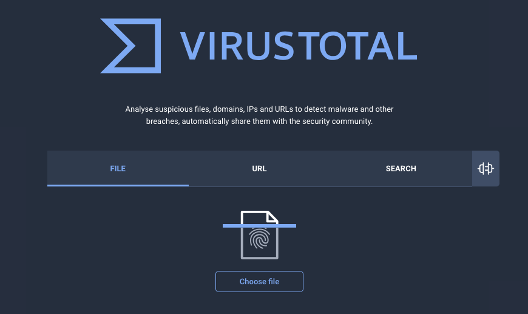
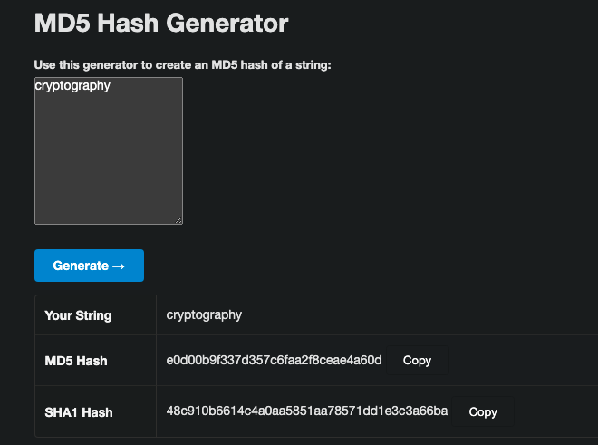

Cyber Security terms and definitions.

Asset
Assets are anything that a cyber security strategy should protect. Assets are physical and digital, software and hardware along with the data pertaining to them.
Access Control (AC)
Any website or web application that restricts access to only users and their data on that website or app.
Authentication
Making sure only verified users have access to data on a website or app. Authentication is proving the user is who they claim to be. Authentication is done by username, passwords, and 2 Factor Authentication (2FA).
Antivirus
A software used for detecting and removing a malicious software from the machine that the antivirus is installed on.
To see if a program or file is malicious you can upload it to VirusTotal to analyze it and rate out of 100 to check how dangerous it is. Once you upload a file this information is dispersed to all the antivirus software companies/vendors.

Bug
The term ‘bug’ in computer history is credited to computer programmer Grace Hopper in 1947.
It simply means there is an error in the software code, which will crash your program or cause there to be a vulnerability. Anyone who works with software knows bugs, they are part of life.
Botnet
A collection of computers which have been infected by a malicious software in order to run commands given to them by the attacker from the Command and Control Centre.
Blue Team
A team of cyber security professionals with a shared goal to defend and protect an organization from Cyber Attacks. This teams is part of the Security Operations Center (SOC) who are actively watching for attacks.
Black Hat
A black hat hacker is one who breaks the law and violates security policies for personal profit (and fame). Hacking into a company’s system without explicit authorization is black hat activity.
If you want to see how many researchers investigate and explore the world of black hat hackers, there is a YouTube channel, link here.
Critical Infrastructure
Any asset that is vital to the organization and is the main focus for security teams strategies in defense.
Cyber Atack
An attempt to compromise/ bypass a protected system. This can range from simple to large scale attacks.
Cryptography
All the mathematical processes performed on data to provide privacy, authentication, integrity and security. The world of hacking deals with hashes.
For an example and useful tool, you can generate your own md5hash and then later use it for learning hashcat and other hashing tools.

The string ‘cryptography’ has the long hash, if you were to change 1 little character or digit the whole hash will be different.
CVE
Common Vulnerabilities and Exposures (CVE) is a term you will absolutely see and hear. A database of publicly disclosed information security issues. A CVE number uniquely identifies one vulnerability from the list.
All CVEs start with the year, then a dash, followed by the number of vulnerabilities found. The link here is for a 2014 CVE, TimThumb and WordThumb which allowed Remote Code Execution (RCE), NIST CVE database.
Data breach
The unwanted disclosure or access to confidential information.
Data theft
The intentional act of stealing data. Stealing daya can be done through physical means or a data leak resulting for a code vulnerability.
DDOS
This term is common to hear. Distributed Denial of Service. An attack during which the access of a certain system is blocked usually due to purposely ran flooding attacks and connection resource demand.
- the website is unreachable, it is broken
Digital Forensics
Digital forensics is a branch of cyber security that is involved after a attack has happened. Digital forensics is involved in recovery, investigation, examination and analysis of digital devices (along with physical ones).
DLP
Data Loss Prevention is a collection of security strategies used to prevent the occurrence of data loss and data leakage.
Encoding
Taking plain text and converting it to ciphertext, unreadable and ununderstandble text.
- If you did the hash example then you understand this.
Encyrption key
Encryption Key is a random string of bits created for scrambling and unscrambling data. They are designed with intention to be unpredictable and unique.
Firewall
A software security tool used for filtering web traffic. The firewall is controlled by a set of rules which traffic will be let through and which is blocked.
- Host based firewall
- Network based firewall
Honeypot
An intentional vulnerable system used from trapping Black Hat hackers. It is a false system made as a decoy for the hacker to fall for. When an attacker falls for the honeypot it alerts security experts and researchers of the potential threat.
IDS
Intrusion Detection System is a monitoring system that detects suspicious activities and generates alerts when they are detected.
IPS
Intrusion Prevention System is a security tool to constantly monitor the network for malicious activity, takes actions to prevent and block activities.
Malware
Malicious software or Malware is code written with an intent to cause harm and violate the security of a system. There are many types of Malware:
- RATs remote access trojan
- Keyloggers
- Trojans
- Rootkits
- Backdoors
- Adwares.
Packet Sniffing
This is when you use software like Wireshark and Burpsuite to collect and capture internet packets off of a data network communication.
You are looking at all the HTTPS requests back and forth from your system or network to the endpoint, to see if anyone is sending little network packets with malicious code. This is used for defense and for offense purposes.
Patch
This is a software update to repair a existing software bug/ flaw in the code or system. It is important to keep up to date on your software for devices.
Phishing
Phishing is the most common cyber attack, and is part of Social Engineering strategies for attacks.
The attack is when the target gives their confidential information (username and password) to an email, person on the phone, social media or an acquaintance without knowing it.
Pen Testing
Penetration Tester is part of the security Blue Team or an individual who checks and scans for any bugs and vulnerabilities using various software tools. After a pentest, a report is made which details any bugs and vulnerabilities that were found.
Risk Management
Internet Technology risk management is the application of risk management methods to manage IT threats. IT risk management involves procedures, policies, and tools to identify and assess potential threats and vulnerabilities in IT infrastructure
Red Team
This team is opposing the Blue Team. This team often gets more attention and hype due to its nature of “break stuff and report on it” job.
A group of cybersecurity experts that perform offensive security exercises on the company to test its security.
The goal of this is to act as an attacker and find out as many potential vulnerabilities which can compromise the system/assets of an organization.
- act like a malicious hacker and get paid
This team can also work for a Bug Bounty program, where a company pays Red Teams to find vulnerabilities and get paid for their work.
Sandboxing
The act of isolating a system or an application in order to perform testing. If you installed a Virtual Machine then you have a sandbox environment.
Spam
The folder in your email with messages or your phone being sent text messages that were not wanted.
These typically have spelling errors, general in scope but with ChatGPT and such Artificial Intelligence these spam emails and texts are getting better with English grammar making it easier for victims to fall for these attacks.
VPN
Virtual Private Network is a communication link between systems which is encrypted in order to provide a more secure and private communication.
Your Internet Service Provider (ISP) can see what websites you go to, overall web traffic, but a VPN makes a tunnel in which your home internet IP address changes and the VPN see what website you visit. Many VPN providers do not keep logs and delete them daily, which makes your web traffic more secure. When using a VPN it is a secure way to use the internet.
Vulnerability
Vulnerability Is a flaw in code or system that weakens the overall security of that system.
vulnerability examples:
- using an older web browser
- not updating your phone software
- not updating your computer operating software
- visiting HTTP websites (not encrypted, not safe)
- allowing the browser to store your passwords
White Hat
A white hat hacker or ethical hacker is an individual who uses hacking skills to identify security vulnerabilities in hardware, software or networks.
The line between Black Hat and White Hat is Grey Hat, there is some subjectivity in the details of what a White Hat versus a Grey Hat does. Either way the White Hat reports vulnerabilities and likely does the Bug Bounty programs.
Cyber Security Tools
Some of the widely known and used cyber security tools.
Wireshark
Wireshark is free and open source packet analyzer. Wireshark is the most often-used packet sniffer in the world.
- Wireshark comes installed with Kali Linux.
Tcpdump
Tcpdump is a useful packet sniffing tool for networks. It helps in monitoring and logging TCP/IP traffic that is shared over a network. Tcpdump is preinstalled on most Linux systems and can be ran from terminal.
Nessus
Nessus is one of the best vulnerability assessment scanners out there. Nessus offers 3 different versions: Essentials, Professional and Expert.
- requires a user account
- free version is limited in tools
Metasploit
Metasploit has an excellent collection of tools that are perfect for penetration testing.
Metasploit is a vulnerable VM which you can run exploits and target.
Burpsuit
Burpsuite is used for performing security testing for web applications. It offers many functions from simple proxy functionality to different scanners, intruders to even more advance options such as spider, repeater, and decoder.
This is a Graphical User Interface (GUI) and is very much a tool you will need to be familiar with in most cyber security actions.
Nmap
Nmap (Network Mapper) is a free and open source tool used for network scanning and security auditing.
This is normally one of the first things you learn to use, when learning Networking and ports.
- installed on Kali Linux and Parrot OS
Aircrack-ng
Aircrack-ng is a complete suite of tools to assess WiFi network security. Several things can be performed with aircrack from monitoring to attacking and cracking the password of the access point.
Social Engineering
Social Engineering is a field on its own, it is how many cyber attacks are performed and it does not get much attention in context of other cyber security topics.
Social engineering is the term used for a broad range of malicious activities accomplished through human interactions.
Example: Call your bank, provide incorrect information and see if you are able to bypass your security question. Your birthday is often the security question which a friend or colleague would know.